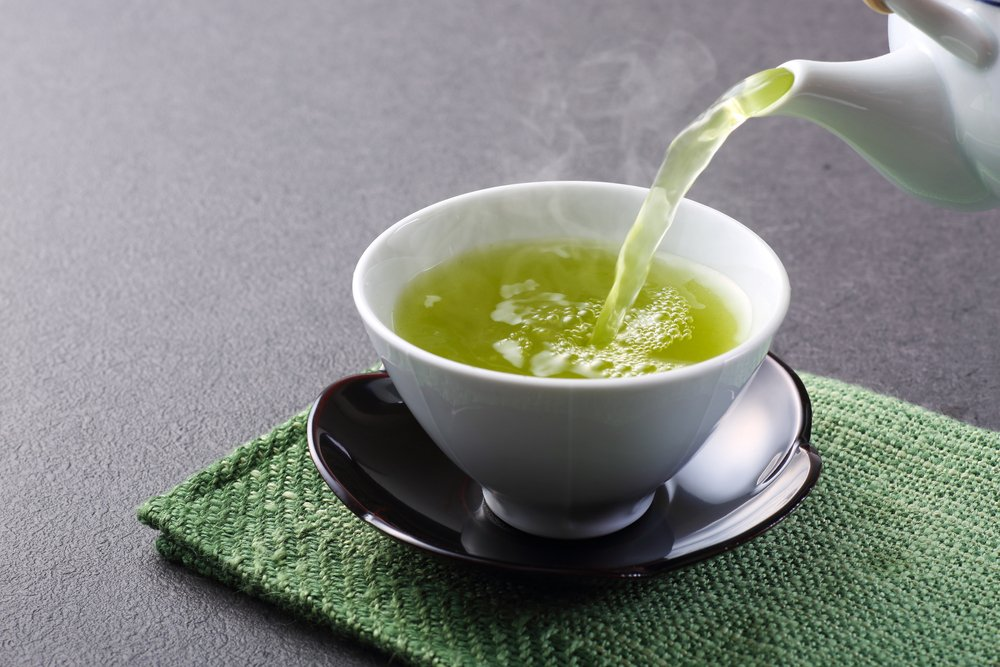
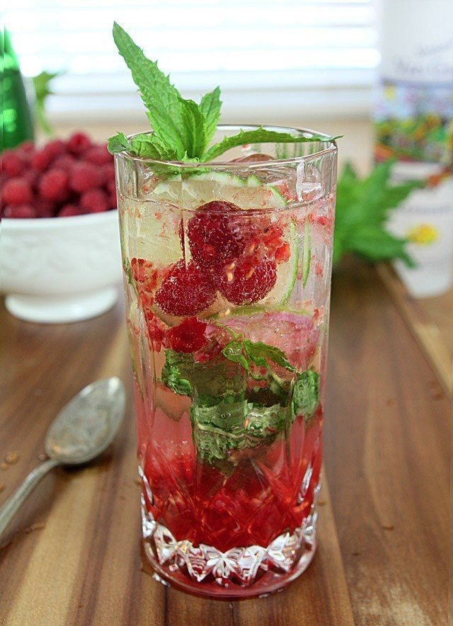
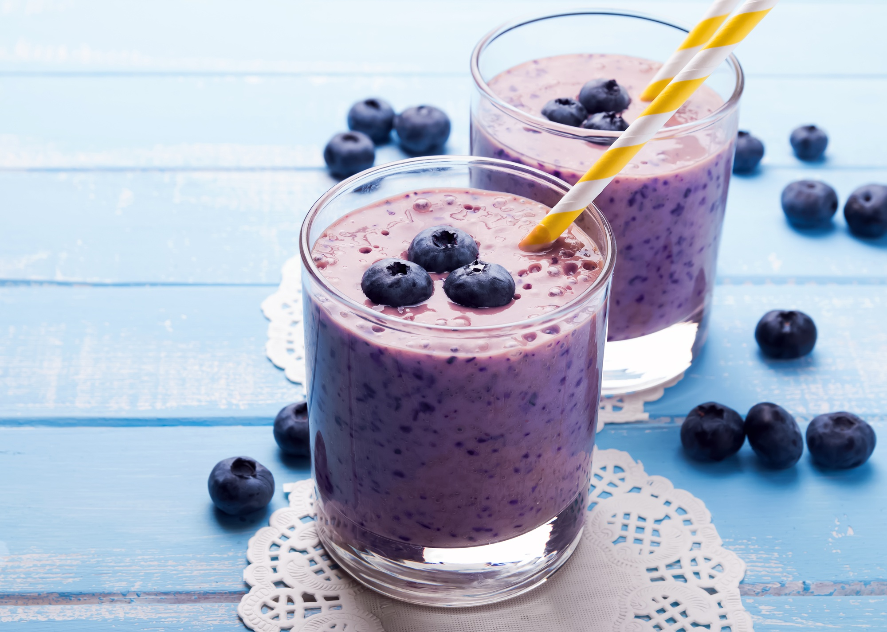
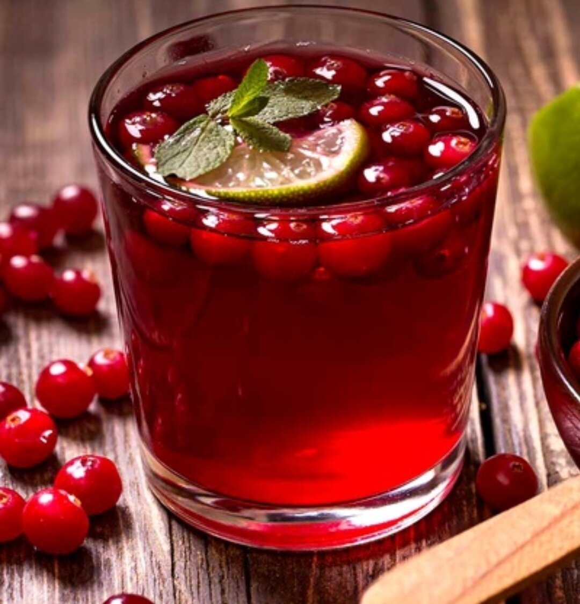

 Этот напиток содержит огромное количество витаминов и минералов и приносит пользу для здоровья благодаря составу: зеленый чай, цветки ромашки и корень имбиря.
 Сочетая в себе малиновый сок и лимонное сорго, цедру цитрусовых и плоды шиповника, этот прохладительный напиток освежит и прояснит ваш разум.
 Экстракты голубики и вишни, добавленные в травяной чай из бузины, сразу же приведут вас в состояние покоя и блаженства.
 Зарядитесь энергией богатого витамином C напитка со вкусом клюквы и гибикуса.
Вернуться к гостевой